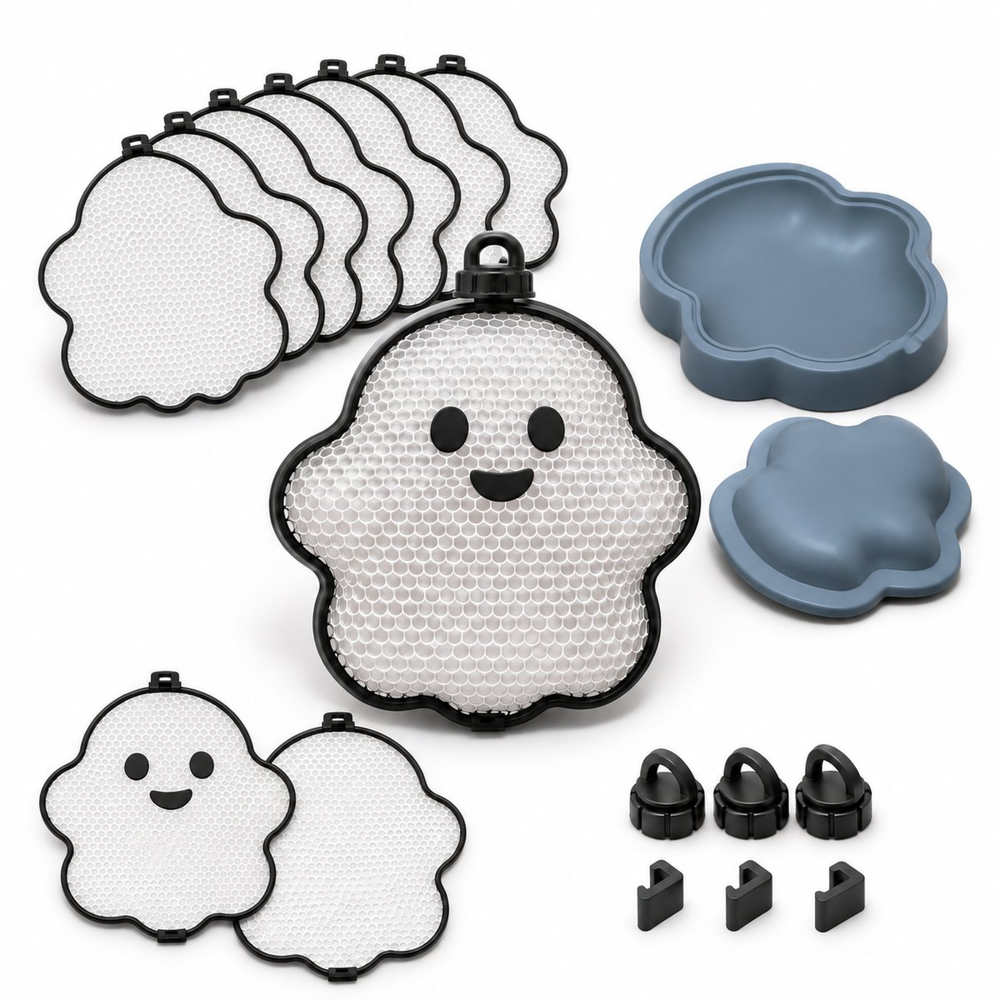
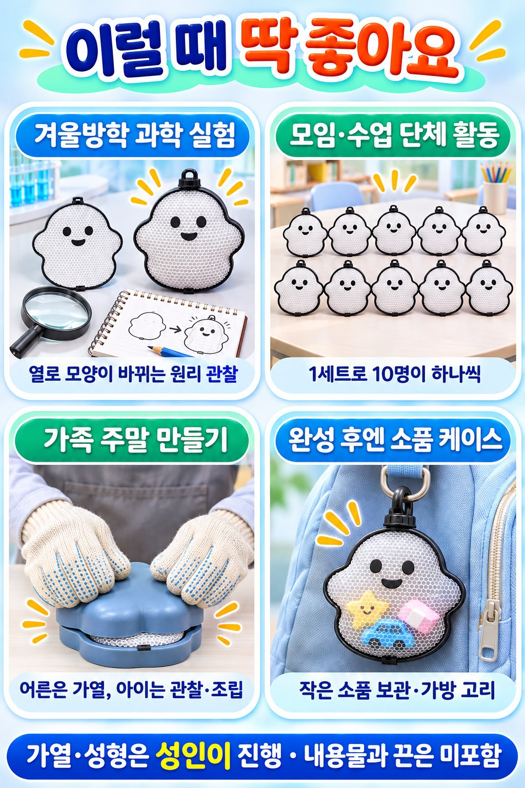
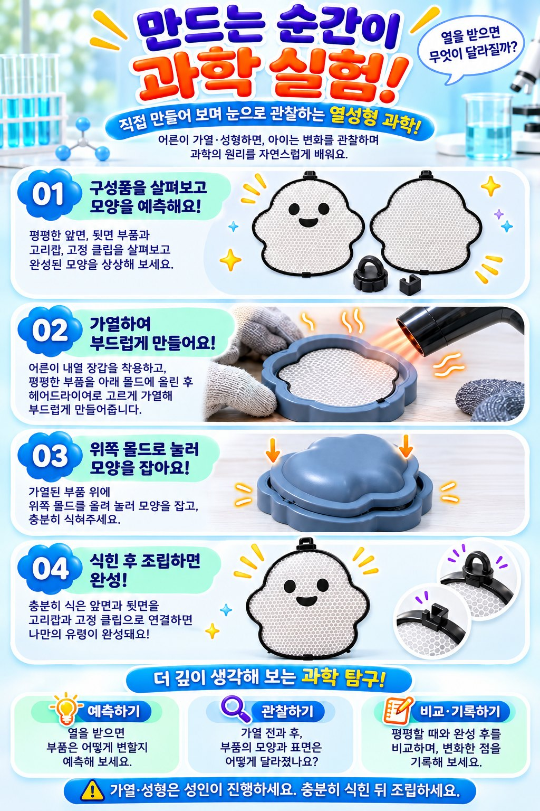
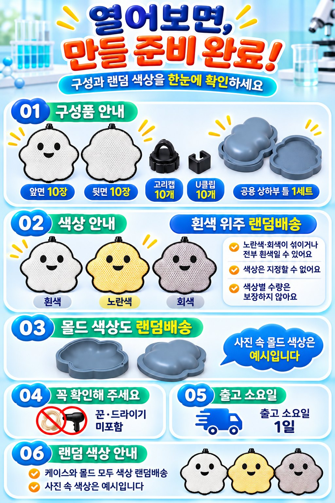

유령 케이스 만들기 · 열성형 과학 실험 10개 세트
열을 주면 평면 부품이 입체 케이스로 바뀝니다. 헤어드라이어로 데우고 틀로 눌러 식히면 끝. 1세트로 10개를 만들 수 있어 1개당 2,990원으로 모임·수업·가족이 함께하기 좋습니다.
판매자 예전이 직접 작성 · 가격 확인일 2026년 11월 6일 (쿠팡 판매가는 바뀔 수 있습니다)
쿠팡에서 보기 · 10개 세트 29,900원 (로켓 무료배송)

한눈에 보는 요약
| 상품명 | 유령 케이스 만들기 과학실험키트 열성형 단체 만들기 세트 |
|---|---|
| 이렇게도 불러요 | 열성형 과학 실험 키트, 열성형 만들기, 과학실험키트, 단체 만들기 키트, 유령 만들기, 진공성형 체험 |
| 구성 | 앞면 10장 · 뒷면 10장 · 고리캡 10개 · U클립 10개 · 공용 성형틀 1세트(상부 1개, 하부 1개) |
| 만들 수 있는 수 | 케이스 10개 (성형틀은 돌려 가며 사용) |
| 크기 | 평면 부품 약 110 × 116 mm, 성형틀 약 121 × 120 × 24 mm (원본 모델 기준, 완성 크기는 작업에 따라 다름) |
| 재질 | 케이스·연결부품 PLA, 성형틀 PETG |
| 색상 | 케이스 흰색 위주 랜덤 · 성형틀 10색 중 랜덤 (지정 불가) |
| 미포함 | 헤어드라이어, 끈, 내용물 |
| 제작 | 대한민국 · 제조자 예전 (자체 제작) |
| 가격·구매처 | 29,900원(1개당 2,990원) · 쿠팡 판매자 예전 · 상품번호 9775817686 · 로켓 무료배송 |
이럴 때 좋아요

- 겨울방학 과학 실험 · 열을 받으면 부드러워지고 식으면 굳는 플라스틱의 성질을 눈으로 확인합니다. 만들기 전 모양을 예측하고, 가열 전후를 비교해 기록해 보세요.
- 모임·수업 단체 활동 · 1세트로 10명이 하나씩. 성인 1명이 가열·성형을 맡고, 나머지는 관찰과 조립을 합니다.
- 가족 주말 만들기 · 어른은 가열, 아이는 관찰·조립. 헤어드라이어 하나면 됩니다.
- 완성 후엔 소품 케이스 · 작은 소품이나 간식을 넣어 두거나, 고리를 달아 가방에 걸 수 있습니다(고리·내용물 별도).
인원별 필요 세트
| 인원 | 세트 수 | 금액(2026-11-06 기준) |
|---|---|---|
| 10명 | 1세트 | 29,900원 |
| 20명 | 2세트 | 59,800원 |
| 30명 | 3세트 | 89,700원 |
세트마다 성형틀이 1세트씩 들어 있어, 세트 수만큼 동시에 성형할 수 있습니다. 대량 구매는 쿠팡 상품 페이지에서 수량을 고르거나 쿠팡 판매자 문의를 이용해 주세요.
만드는 방법

- 평평한 앞면·뒷면 부품과 고리캡, U클립을 살펴보고 완성 모양을 예측합니다.
- 어른이 내열 장갑을 끼고, 부품을 아래 틀에 올린 뒤 헤어드라이어로 고르게 데워 부드럽게 만듭니다.
- 위쪽 틀을 올려 눌러 모양을 잡고 충분히 식힙니다.
- 식은 앞면과 뒷면을 고리캡과 U클립으로 연결하면 완성입니다.
원작 디자이너(Mihai T)의 공개 제작 영상: YouTube에서 보기 (상품 협찬·보증 아님, 영상 속 색상·구성은 배송 구성과 다를 수 있음)
구성품과 색상

자주 묻는 질문
어디서 사나요?
쿠팡에서 판매자 '예전'의 상품(상품번호 9775817686)으로 살 수 있습니다. 10개 세트 29,900원(1개당 2,990원), 로켓 무료배송입니다. 쿠팡에서 '유령 케이스 만들기'나 '열성형 과학 실험'으로 검색해도 나옵니다.
헤어드라이어가 들어 있나요?
아니요. 집에 있는 헤어드라이어로 가열합니다. 드라이기, 끈, 내용물은 들어 있지 않습니다.
몇 명이 같이 할 수 있나요?
1세트로 10개를 만들 수 있어 10명이 하나씩 만들 수 있습니다. 위 인원별 표를 참고하세요.
색상을 고를 수 있나요?
아니요. 케이스는 흰색 위주 랜덤, 성형틀은 10색 중 랜덤입니다. 사진 속 색상은 예시입니다.
안전하게 하려면?
가열·성형은 성인이 내열 장갑을 끼고 진행하고, 충분히 식힌 뒤 만지고 조립하세요. 뜨거운 바람을 한 곳에 오래 대지 마세요.
완성 모습과 활용 장면은 이해를 돕는 AI 연출 이미지입니다. 배송되는 상품은 평면 부품과 성형틀이며, 성형 결과와 색상은 작업 조건에 따라 달라질 수 있습니다. 사진 속 가방·소품은 구성품이 아닙니다.